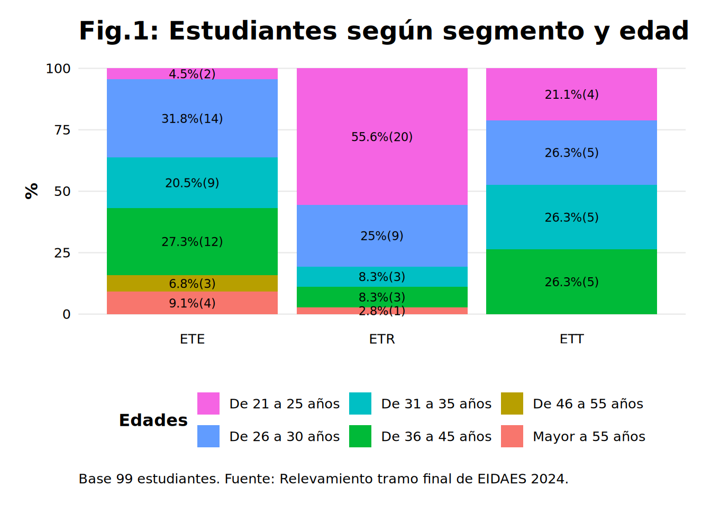
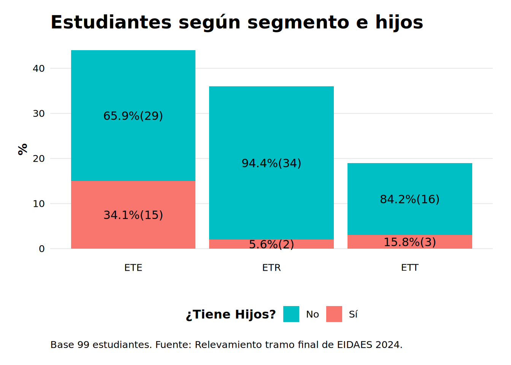
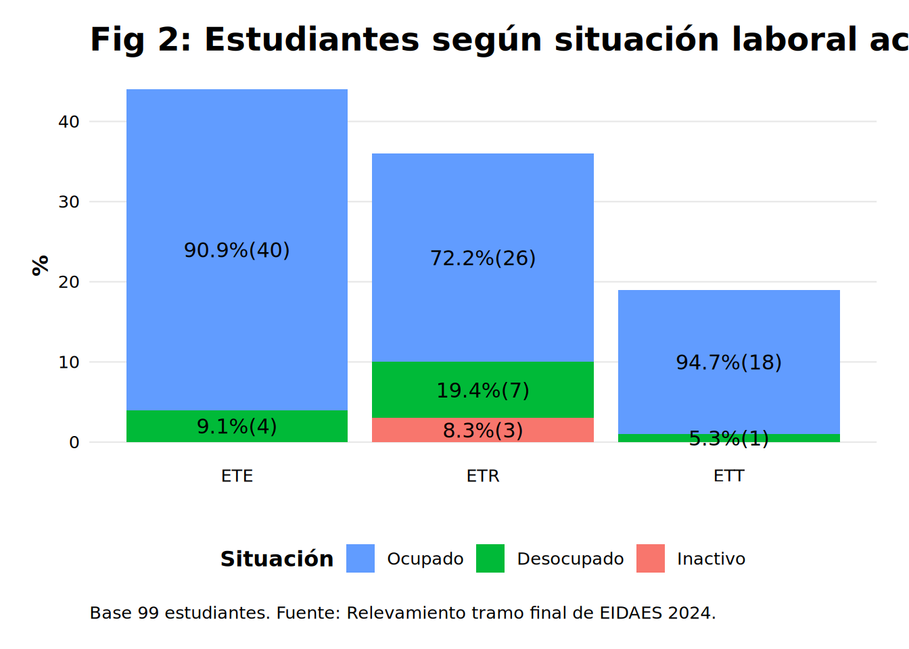
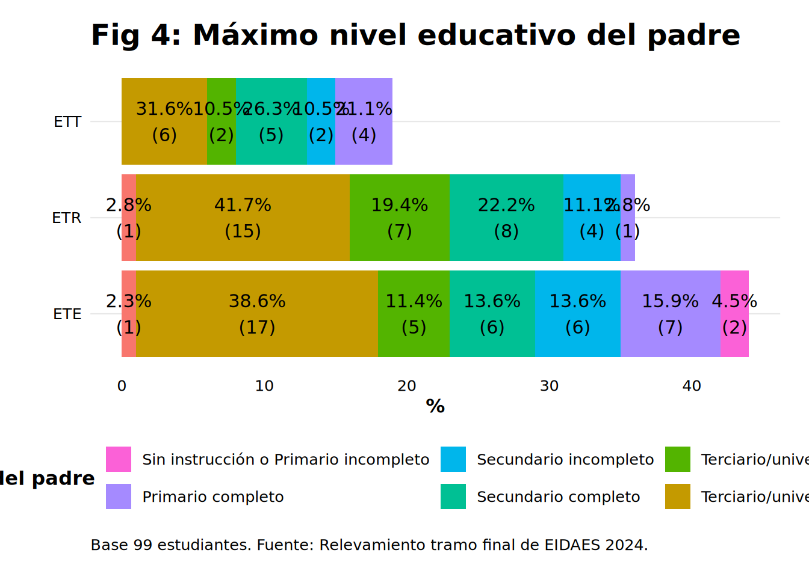
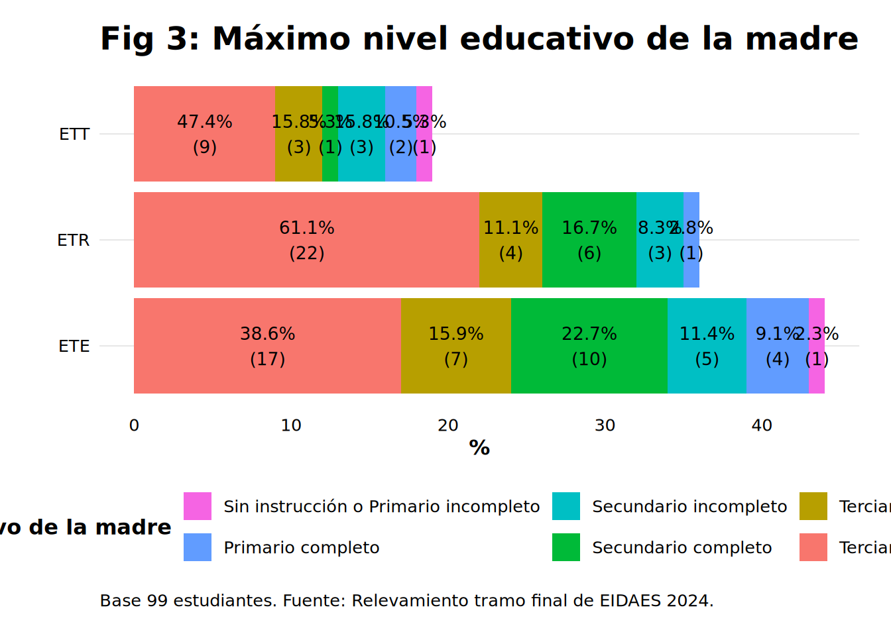
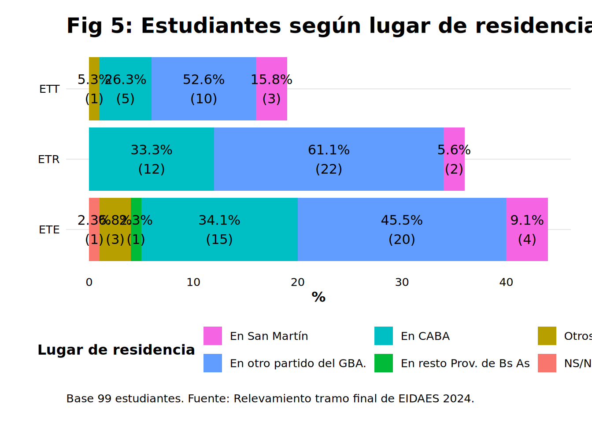

## librerias -------------------------------------------------------------
library(tidyverse) # universo de librerías con filosofía tidy
library(janitor) # libreria para la limpieza y armado de tablas rápidas
library(gt) # una librería para hermosear tablas
library(ggplot2)
library(showtext)
library(here)
# llamo a la base
df <- readRDS(here("input", "base_2024_final_anoni1 (3).rds")) |>
janitor::clean_names() |>
filter(carrera == "1- Sociología")
# parametros
anio_encuesta <- 2024
duracion_carrera <- 5
# transformacion de la base agrego la variable segmentos
df <- df |>
mutate(
segmentos = case_when(
p48 == "1- Soy graduadx o entregué la tesina y estoy esperando fecha de defensa" ~ "ETT",
p48 == "2-Soy estudiante" & p27 < anio_encuesta - duracion_carrera ~ "ETE",
p48 == "2-Soy estudiante" & p27 >= anio_encuesta - duracion_carrera ~ "ETR",
TRUE ~ "Otra situación" )
)
## THEME PARA GGPLOT --------------------------
# Instalamos las fuentes
font_add_google("Saira")
font_add_google("Faustina")
# Creamos el theme con ia
theme_unsam <- function(base_size = 12) {
theme_minimal(
base_size = base_size,
base_family = "Faustina"
) +
theme(
# Títulos
plot.title = element_text(
family = "Saira",
face = "bold",
size = rel(1.5),
color = "black",
margin = margin(b = 8)
),
plot.subtitle = element_text(
family = "Faustina",
size = rel(1.05),
color = "black",
margin = margin(b = 12)
),
plot.caption = element_text(
family = "Faustina",
size = rel(0.8),
color = "black",
hjust = 0,
margin = margin(t = 12)
),
# Ejes
axis.title = element_text(
family = "Saira",
face = "bold",
color = "black"
),
axis.text = element_text(
family = "Faustina",
color = "black"
),
axis.ticks = element_blank(),
# Grillas
panel.grid.major.x = element_blank(),
panel.grid.major.y = element_line(
color = "#E8E8E8",
linewidth = 0.4
),
panel.grid.minor = element_blank(),
# Leyendas
legend.title = element_text(
family = "Saira",
face = "bold",
color = "black"
),
legend.text = element_text(
family = "Faustina",
color = "black"
),
legend.position = "bottom",
# Facetas (en caso que usemos)
strip.text = element_text(
family = "Saira",
face = "bold",
color = "black"
),
strip.background = element_rect(
fill = "#F2F2F2",
color = NA
),
# Fondo
panel.background = element_rect(
fill = "white",
color = NA
),
plot.background = element_rect(
fill = "white",
color = NA
),
# Márgenes
plot.margin = margin(15, 18, 15, 18)
)
}05_graficos_theme_unsam
Tabla 1 - segmentos según edad agrupada
Paso 1: creo la tabla de resumen
segmentos_edad <- df |>
mutate(edad_r=factor(edad_r,
levels = c("1- De 21 a 25 años",
"2- De 26 a 30 años","3- De 31 a 35 años",
"4- De 36 a 45 años", "5- De 46 a 55 años",
"6- Mayor a 55 años"),
labels = c("De 21 a 25 años",
"De 26 a 30 años","De 31 a 35 años",
"De 36 a 45 años","De 46 a 55 años",
"Mayor a 55 años")))|>
group_by(segmentos,edad_r) |>
summarise(estudiantes_n = n_distinct(id)) |>
mutate(estudiantes_prop = round(estudiantes_n/sum(estudiantes_n)*100,1))
head(segmentos_edad)# A tibble: 6 × 4
# Groups: segmentos [1]
segmentos edad_r estudiantes_n estudiantes_prop
<chr> <fct> <int> <dbl>
1 ETE De 21 a 25 años 2 4.5
2 ETE De 26 a 30 años 14 31.8
3 ETE De 31 a 35 años 9 20.5
4 ETE De 36 a 45 años 12 27.3
5 ETE De 46 a 55 años 3 6.8
6 ETE Mayor a 55 años 4 9.1Paso 2: me ayudo con esquisser a armar el gráfico llamando a esquisser(segmentos_edad)
Paso 3: edito el código y le cambio otras cosas. por ej. acá le agregamos otro geom. Hago una lectura línea por línea para incorporar los conceptos que me ayudó a escribir esquiesser
ggplot(segmentos_edad) +
aes(x = segmentos, y = estudiantes_prop, fill = edad_r) + # 👈 estructura general
geom_col() + # 👈 geometría elegida
scale_fill_hue(direction = -1) + # 👈 dirección del color
labs(x = " ", # 👈 Etiquetas del cuerpo del gráfico
y = "%",
title = "Fig.1: Estudiantes según segmento y edad",
caption = "Base 99 estudiantes. Fuente: Relevamiento tramo final de EIDAES 2024.",
fill = "Edades") +
geom_text( # 👈 Agreho una nueva geometría de texto para ponerle los valores de cada categ.
label = paste0(
segmentos_edad$estudiantes_prop,
"%",
"(",
segmentos_edad$estudiantes_n,
")"),
position = position_stack(vjust = 0.5),
size = 3) +
theme_unsam()
Paso 4: Replico el código por otras variables categóricas de mi interés
Primero creo la tabla Estudiantes con hijos
segmentos_hijos <- df |>
mutate(p06 = if_else(p06 == "1- Sí", "Sí","No")) |> # transformacion previa de las etiquetas
group_by(segmentos,p06) |>
summarise(estudiantes_n = n_distinct(id)) |>
mutate(estudiantes_prop = round(estudiantes_n/sum(estudiantes_n)*100,1))
head(segmentos_hijos)# A tibble: 6 × 4
# Groups: segmentos [3]
segmentos p06 estudiantes_n estudiantes_prop
<chr> <chr> <int> <dbl>
1 ETE No 29 65.9
2 ETE Sí 15 34.1
3 ETR No 34 94.4
4 ETR Sí 2 5.6
5 ETT No 16 84.2
6 ETT Sí 3 15.8y luego copio y Hago el gráfico cambiando la fuente y variable de relleno (fill) Combinar dos valores en geom_text() con paste0() Otra opción del gráfico con N en vez de porcentaje y dejo los porcentaje como parte de la etiqueta
ggplot(segmentos_hijos) +
aes(x = segmentos, y = estudiantes_n, fill = p06) + # 👈 ponemos el N en el eje Y
geom_col() +
scale_fill_hue(direction = -1) +
labs(x = " ",
y = "%",
title = "Estudiantes según segmento e hijos",
caption = "Base 99 estudiantes. Fuente: Relevamiento tramo final de EIDAES 2024.",
fill = "¿Tiene Hijos?") +
geom_text(
#👈 en la etiqueta combinamos con paste los dos valores de la tabla
label = paste0(
segmentos_hijos$estudiantes_prop,
"%",
"(",
segmentos_hijos$estudiantes_n,
")"),
position = position_stack(vjust = 0.5),
size = 4)+
theme_unsam()
Primero creo la tabla trabajo
segmentos_trabaja <- df |>
mutate(p13_r=factor(p13_r,
levels = c("1- Ocupado","2- Desocupado","3- Inactivo"),
labels = c("Ocupado","Desocupado","Inactivo")))|>
group_by(segmentos,p13_r) |>
summarise(estudiantes_n = n_distinct(id)) |>
mutate(estudiantes_prop = round(estudiantes_n/sum(estudiantes_n)*100,1))
head(segmentos_trabaja)# A tibble: 6 × 4
# Groups: segmentos [3]
segmentos p13_r estudiantes_n estudiantes_prop
<chr> <fct> <int> <dbl>
1 ETE Ocupado 40 90.9
2 ETE Desocupado 4 9.1
3 ETR Ocupado 26 72.2
4 ETR Desocupado 7 19.4
5 ETR Inactivo 3 8.3
6 ETT Ocupado 18 94.7luego grafico
ggplot(segmentos_trabaja) +
aes(x = segmentos, y = estudiantes_n, fill = p13_r) + # 👈 ponemos el N en el eje Y
geom_col() +
scale_fill_hue(direction = -1) +
labs(x = " ",
y = "%",
title = "Fig 2: Estudiantes según situación laboral actual",
caption = "Base 99 estudiantes. Fuente: Relevamiento tramo final de EIDAES 2024.",
fill = "Situación") +
geom_text(
#👈 en la etiqueta combinamos con paste los dos valores de la tabla
label = paste0(
segmentos_trabaja$estudiantes_prop,
"%",
"(",
segmentos_trabaja$estudiantes_n,
")"),
position = position_stack(vjust = 0.5),
size = 4)+
theme_unsam()
Primero creo la tabla Educacion del padre
segmentos_niveleducativo_padre <- df |>
mutate(p11=factor(p11,
levels = c("1- Sin instrucción o Primario incompleto",
"2- Primario completo","3- Secundario incompleto",
"4- Secundario completo", "5- Terciario/universitario incompleto",
"6- Terciario/universitario completo", "9- NS/NR"),
labels = c("Sin instrucción o Primario incompleto",
"Primario completo","Secundario incompleto",
"Secundario completo", "Terciario/universitario incompleto",
"Terciario/universitario completo", "NS/NR")))|>
group_by(segmentos,p11) |>
summarise(estudiantes_n = n_distinct(id)) |>
mutate(estudiantes_prop = round(estudiantes_n/sum(estudiantes_n)*100,1))
head(segmentos_niveleducativo_padre)# A tibble: 6 × 4
# Groups: segmentos [1]
segmentos p11 estudiantes_n estudiantes_prop
<chr> <fct> <int> <dbl>
1 ETE Sin instrucción o Primario incompleto 2 4.5
2 ETE Primario completo 7 15.9
3 ETE Secundario incompleto 6 13.6
4 ETE Secundario completo 6 13.6
5 ETE Terciario/universitario incompleto 5 11.4
6 ETE Terciario/universitario completo 17 38.6hago el gráfico
ggplot(segmentos_niveleducativo_padre) +
aes(x = segmentos, y = estudiantes_n, fill = p11) + # 👈 ponemos el N en el eje Y
geom_col() +
scale_fill_hue(direction = -1) +
labs(x = " ",
y = "%",
title = "Fig 4: Máximo nivel educativo del padre",
caption = "Base 99 estudiantes. Fuente: Relevamiento tramo final de EIDAES 2024.",
fill = "Nivel educativo del padre") +
geom_text(
#👈 en la etiqueta combinamos con paste los dos valores de la tabla
label = paste0(
segmentos_niveleducativo_padre$estudiantes_prop,
"%",
"\n(",
segmentos_niveleducativo_padre$estudiantes_n,
")"),
position = position_stack(vjust = 0.5),
size = 4)+
coord_flip()+
theme_unsam()
Primero creo la tabla Educacion de la madre
segmentos_niveleducativo_madre <- df |>
mutate(p12=factor(p12,
levels = c("1- Sin instrucción o Primario incompleto",
"2- Primario completo","3- Secundario incompleto",
"4- Secundario completo", "5- Terciario/universitario incompleto",
"6- Terciario/universitario completo", "9- NS/NR"),
labels = c("Sin instrucción o Primario incompleto",
"Primario completo","Secundario incompleto",
"Secundario completo", "Terciario/universitario incompleto",
"Terciario/universitario completo", "NS/NR")))|>
group_by(segmentos,p12) |>
summarise(estudiantes_n = n_distinct(id)) |>
mutate(estudiantes_prop = round(estudiantes_n/sum(estudiantes_n)*100,1))
head(segmentos_niveleducativo_madre)# A tibble: 6 × 4
# Groups: segmentos [1]
segmentos p12 estudiantes_n estudiantes_prop
<chr> <fct> <int> <dbl>
1 ETE Sin instrucción o Primario incompleto 1 2.3
2 ETE Primario completo 4 9.1
3 ETE Secundario incompleto 5 11.4
4 ETE Secundario completo 10 22.7
5 ETE Terciario/universitario incompleto 7 15.9
6 ETE Terciario/universitario completo 17 38.6ggplot(segmentos_niveleducativo_madre) +
aes(x = segmentos, y = estudiantes_n, fill = p12) + # 👈 ponemos el N en el eje Y
geom_col() +
scale_fill_hue(direction = -1) +
labs(x = " ",
y = "%",
title = "Fig 3: Máximo nivel educativo de la madre",
caption = "Base 99 estudiantes. Fuente: Relevamiento tramo final de EIDAES 2024.",
fill = "Nivel educativo de la madre") +
geom_text(
#👈 en la etiqueta combinamos con paste los dos valores de la tabla
label = paste0(
segmentos_niveleducativo_madre$estudiantes_prop,
"%",
"\n(",
segmentos_niveleducativo_madre$estudiantes_n,
")"),
position = position_stack(vjust = 0.5),
size = 3.5)+
coord_flip()+
theme_unsam()
Creamos la tabla de lugar de residencia
segmentos_lugar_de_residencia <- df |>
mutate(p10_r = factor(
p10_r,
levels = c("1- En San Martín",
"2- En otro partido del Gran Bs. As.",
"3- En CABA",
"4- En resto Prov. de Bs As",
"5- Otros",
"9- NS/NC"),
labels = c("En San Martín",
"En otro partido del GBA.",
"En CABA",
"En resto Prov. de Bs As",
"Otros",
"NS/NC"),
ordered = T)
) |>
group_by(segmentos,p10_r) |>
summarise(estudiantes_n = n_distinct(id)) |>
mutate(estudiantes_prop = round(estudiantes_n/sum(estudiantes_n)*100,1))
head(segmentos_lugar_de_residencia)# A tibble: 6 × 4
# Groups: segmentos [1]
segmentos p10_r estudiantes_n estudiantes_prop
<chr> <ord> <int> <dbl>
1 ETE En San Martín 4 9.1
2 ETE En otro partido del GBA. 20 45.5
3 ETE En CABA 15 34.1
4 ETE En resto Prov. de Bs As 1 2.3
5 ETE Otros 3 6.8
6 ETE NS/NC 1 2.3ggplot(segmentos_lugar_de_residencia) +
aes(x = segmentos, y = estudiantes_n, fill = p10_r) + # 👈 ponemos el N en el eje Y
geom_col() +
scale_fill_hue(direction = -1) +
labs(x = " ",
y = "%",
title = "Fig 5: Estudiantes según lugar de residencia",
caption = "Base 99 estudiantes. Fuente: Relevamiento tramo final de EIDAES 2024.",
fill = "Lugar de residencia") +
geom_text(
#👈 en la etiqueta combinamos con paste los dos valores de la tabla
label = paste0(
segmentos_lugar_de_residencia$estudiantes_prop,
"%",
"\n(",
segmentos_lugar_de_residencia$estudiantes_n,
")"),
position = position_stack(vjust = 0.5),
size = 4)+
coord_flip()+
theme_unsam()